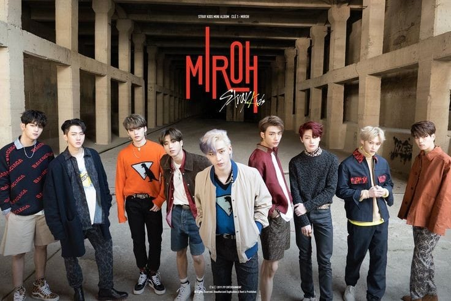

CANCIONES TOP
GOD'S MENU
La canción GOD'S MENU de Stray Kids es una metáfora culinaria que representa la habilidad del grupo para crear musica innovadora y atractiva. La letra compara la musica con un menú de platos exquisitos, sugiriendo que Stray Kids ofrece una variedad de 'sabores' y experiencias a través de sus canciones. Su MV oficial tiene 506 Millones de vistas en YouTube.
Escucha en YouTube
THUNDEROUS
La canción THUNDEROUS (소리꾼) de Stray Kids es un himno de empoderamiento y autoafirmación. En ella, los miembros del grupo de K-pop surcoreano se presentan como figuras desafiantes y confiadas, que no se dejan intimidar por las críticas o las expectativas de los demás. La letra utiliza metáforas relacionadas con fenómenos naturales poderosos, como huracanes y tormentas, para simbolizar la fuerza y la presencia imponente del grupo en la escena musical.
El término '소리꾼' (sorikkun) se refiere a una persona que hace ruido o llama la atención, y en el contexto de la canción, representa a los miembros de Stray Kids que no temen expresarse ruidosamente y con confianza.
Escucha en YouTube
MIROH
La canción MIROH de Stray Kids es un himno enérgico que refleja la determinación y el coraje de enfrentar desafíos desconocidos. El título 'MIROH' es una palabra inventada que combina 'miro', que significa 'laberinto' en coreano, y 'roh', que sugiere una calle o camino. La letra habla de superar montañas y ríos, una metáfora de los obstáculos que uno encuentra en la vida. La canción también aborda la idea de que ser novato o enfrentarse a algo por primera vez puede ser una ventaja, ya que la falta de experiencia puede llevar a enfoques audaces y originales. Stray Kids, conocidos por su música intensa y letras que a menudo se centran en temas de crecimiento y autodescubrimiento, utilizan 'MIROH' para transmitir un mensaje de autoconfianza y resiliencia.
Escucha en YouTube
